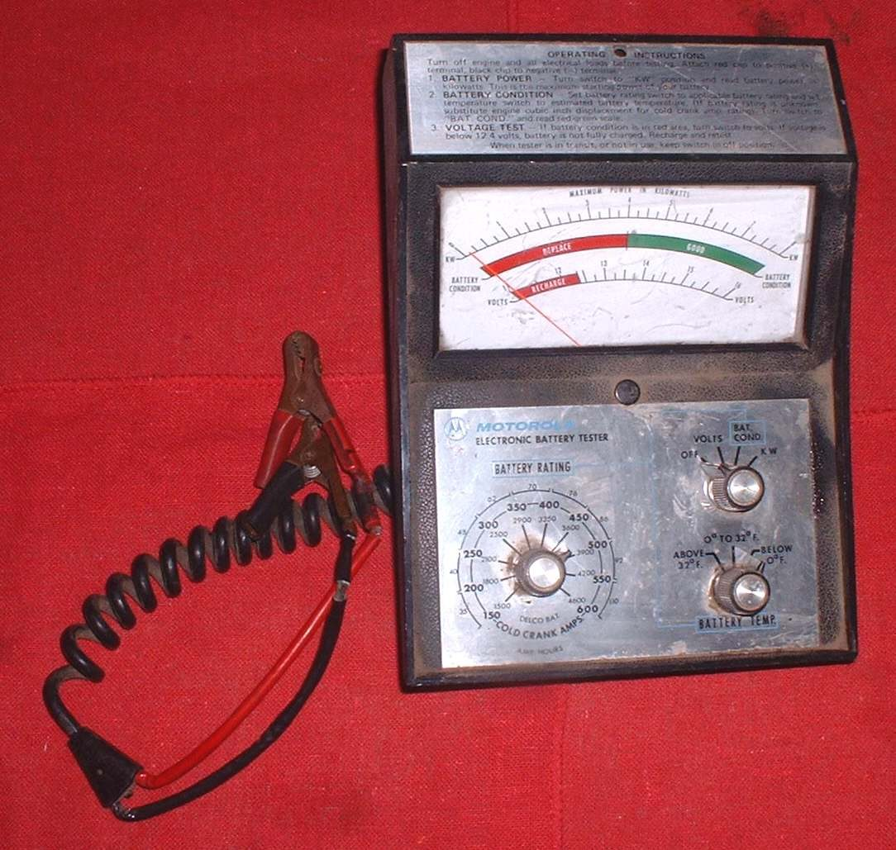
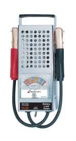
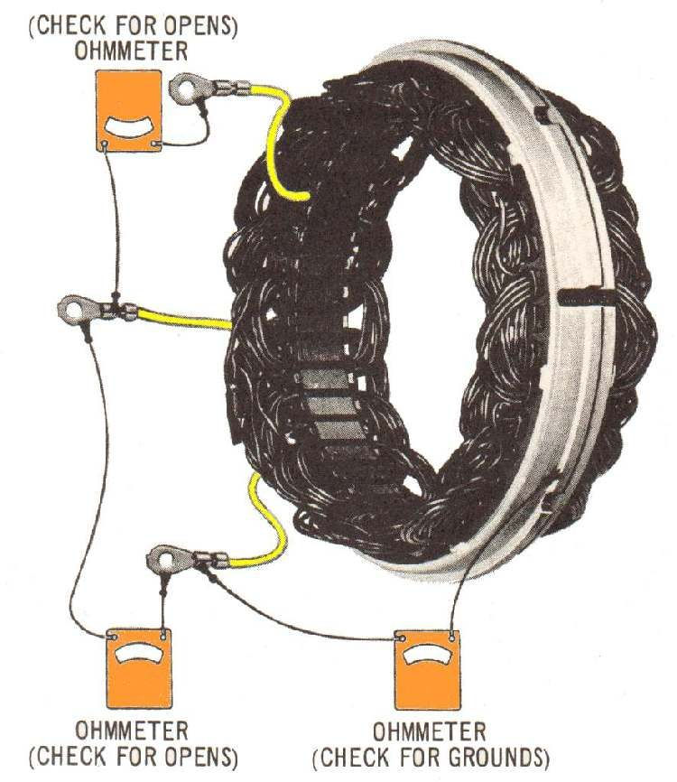
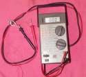

You fitted a new battery and within days or weeks it is flat again. A new battery rarely fails on its own. Usually it was never fully charged before fitting, it is the wrong type or size, or the bike itself is the problem: no charging, overcharging that damages it, or a drain while parked. Find the cause before buying a third battery.
Is it safe to ride?
With care. A bike that may not restart, or a fuel-injected bike whose battery runs low, can leave you stranded.
Quick checks first
- Was the new battery charged with a charger before fitting? Many new batteries need filling or a first charge.
- Is it the type and capacity your manual names? K-Light 125: YTX7A-BS, 12 V 6 Ah.
- Have accessories been added (alarm, USB charger, extra lights)?
- Is the brake light on with the key OFF?
- Are the terminals tight?
Diagnose it step by step
1Was the battery prepared and fully charged before fitting, and is it the correct type?
- No: charge it fully off the bike, or fit the correct battery. Test and charge a 12 V battery, Replace a 12 V battery. The old MAVCC job sheet starts every new battery with filling and a full charge.
- Yes: go to step 2.
2Fully charged, does it keep its voltage off the bike for a day? (K-Light 125: 12.8 V or more after charging)
- No: it may be a faulty new battery. Return it under warranty.
- Yes: the bike is draining or not charging it. Go to step 3.
3Does the charging voltage stay in the manual's range? (K-Light 125: 14.5 ± 0.5 V at 5000 rpm)
- Below range: Battery is not charging while riding.
- Above range: overcharging damages new batteries. Battery overcharges and bulbs blow.
- In range: go to step 4. Use Test the charging system.
4With the key OFF, is the current above the limit? (K-Light 125: 1 mA or less)
- Yes: Find what is draining the battery. Accessories wired straight to the battery are a common cause: Wire an accessory safely.
- No: go to step 5.
5Are most rides short, with lights on and many starts?
- Yes: the generator cannot refill the battery. Charge it with a charger every few weeks, or take longer rides.
- No: have a workshop load-test the battery and the charging system together.
Causes, most likely first
| Cause | How to confirm | Fix |
|---|---|---|
| New battery not charged before fitting | Low voltage from new | Test and charge a 12 V battery |
| Wrong battery type or size | Label differs from manual | Replace a 12 V battery |
| Accessory or stuck brake light draining it | Key-off current above limit | Find what is draining the battery |
| Charging fault | Voltage below range | Test the charging system |
| Overcharging | Voltage above range; hot battery | Test the regulator rectifier |
| Faulty new battery | Will not hold charge off the bike | Warranty claim |
| Dry-charged battery filled but not charged as instructed | Low voltage soon after fitting | Fill and activate a new dry-charged battery |
Reference values (K-Light 125)
| Item | Value | PDF page |
|---|---|---|
| Battery | YTX7A-BS, 12 V 6 Ah | 76 |
| Charge complete, 30 min after charging | 12.8 V or more | 59 |
| Charging voltage | 14.5 ± 0.5 V at 5000 rpm | 78 |
| Key-off leakage current | 1 mA or less | 36 |